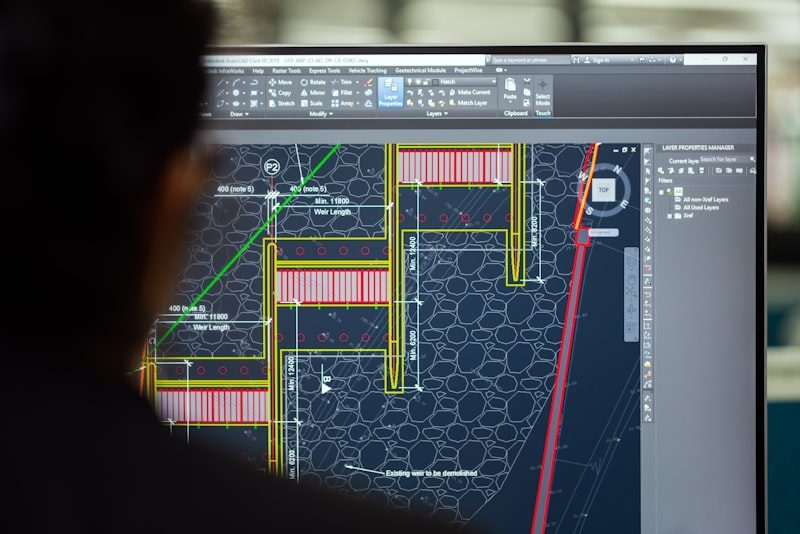
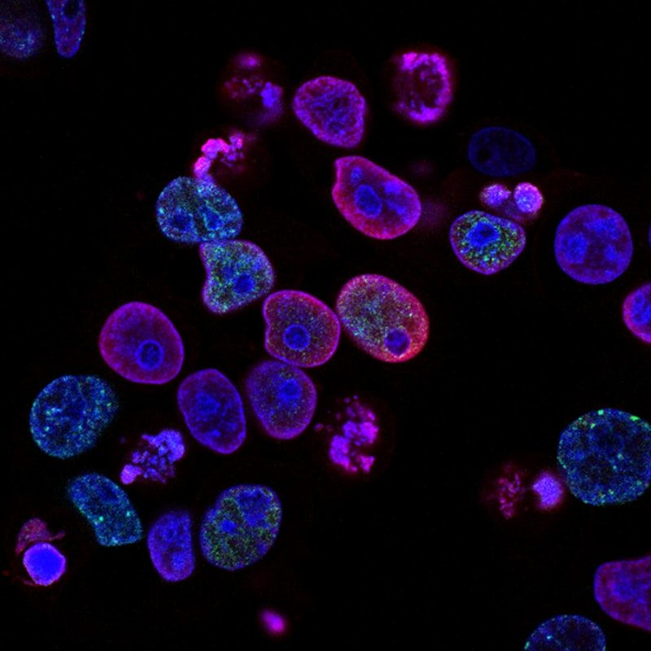
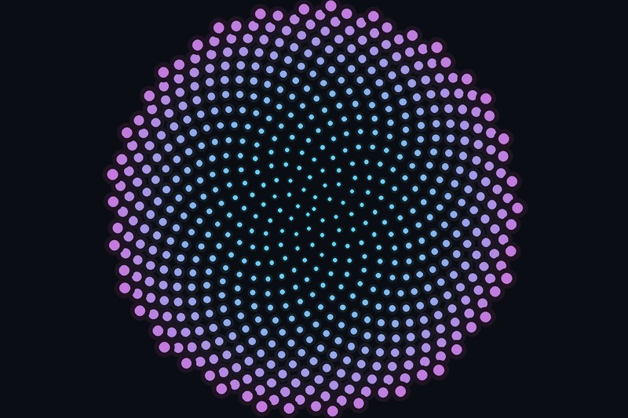
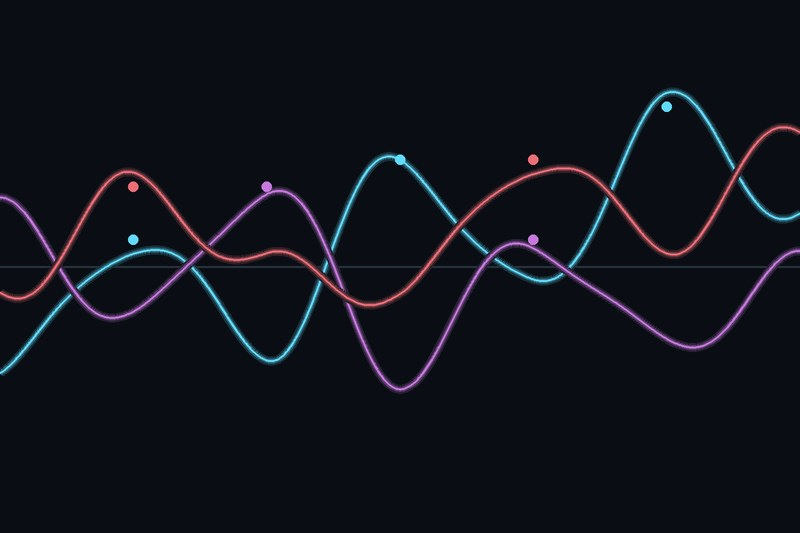

El Método Monte Carlo: Simulaciones para Estimación de π
Descubre cómo el azar puede ser usado para calcular π mediante simulaciones probabilísticas. Un viaje entre la estadística y la geometría.
Explora los avances más fascinantes en matemáticas, programación, inteligencia artificial y ciencias a través de artículos de divulgación seleccionados para mentes curiosas.

Descubre cómo el azar puede ser usado para calcular π mediante simulaciones probabilísticas. Un viaje entre la estadística y la geometría.

El artículo que introdujo el transformer, la arquitectura detrás de todos los LLMs modernos. El equipo de Google propuso sustituir la recurrencia por pura atención — y cambió la historia de la IA.
Midieron energía, tiempo y memoria de 27 lenguajes ejecutando los mismos programas: C, Rust y C++ dominan; Python paga cara su comodidad. El benchmark empírico más citado sobre el costo real de cada lenguaje.
El ensayo clásico del Nobel de Física sobre un "milagro" sin explicación: que las matemáticas, creadas por la mente humana, describan el universo con precisión irrazonable.

Un homenaje a Ada Lovelace, Grace Hopper, Emmy Noether y otras figuras que cambiaron la ciencia.
Con mecánica clásica, fotografía de alta velocidad y una máquina lanzamonedas demostraron que el volado no es justo: la moneda cae del lado que empezó ~51% de las veces. El azar cotidiano bajo el microscopio.

De la proporción áurea y los fractales al arte con código: cómo las matemáticas han modelado la estética durante siglos — y cómo hoy un algoritmo puede pintar. La imagen de esta tarjeta es una filotaxis generada con el ángulo áureo (137.5°).
Mi próxima investigación: aplicar NLP y modelos de lenguaje al manuscrito medieval más grande del mundo — la "Biblia del Diablo" — para mapear las emociones de sus textos en latín, de los evangelios a las fórmulas de exorcismo.
Redes convolucionales profundas aplicadas al reconocimiento de tatuajes sobre el reto Tatt-C del NIST, superando ampliamente a los métodos clásicos. Visión por computadora sobre piel.
Las pinturas de goteo de Pollock tienen dimensión fractal medible — y el ojo humano prefiere, y se relaja con, fractales de dimensión 1.3–1.5: los mismos de nubes, costas y árboles. Ciencia dura sobre por qué el arte gusta.
El primer modelo de lenguaje contextual para latín, entrenado con 642 millones de tokens que abarcan 22 siglos de textos. La base técnica de mi próxima investigación sobre el Codex Gigas.

El survey de referencia sobre detección computacional de emociones en texto: métodos, léxicos, aplicaciones y trampas éticas. El mapa completo del campo donde vivirá mi análisis del Codex Gigas.
Un solo modelo multi-tarea que detecta tatuajes y aprende representaciones compactas para buscarlos entre millones de imágenes. El tatuaje tratado como dato biométrico a escala.
Notas técnicas escritas por mí, con el código al lado: cómo funcionan de verdad los algoritmos que uso en mis proyectos.
Minimax explora el árbol de juego completo: con factor de ramificación b y profundidad d, cuesta O(b^d). En Conecta 4 (b ≈ 7) mirar 10 jugadas son ~282 millones de nodos. La poda alfa-beta no cambia el resultado — devuelve exactamente la misma jugada — pero deja de evaluar ramas que ya no pueden influir en la decisión.
La idea cabe en dos variables: α es lo mejor que MAX ya tiene garantizado, β lo mejor que MIN ya tiene garantizado. Si en algún punto α ≥ β, el jugador anterior nunca permitirá llegar a esta rama: se poda.
int alphaBeta(Node n, int depth, int alpha, int beta, boolean max) { if (depth == 0 || n.isTerminal()) return n.evaluate(); for (Node child : n.children()) { int val = alphaBeta(child, depth - 1, alpha, beta, !max); if (max) alpha = Math.max(alpha, val); else beta = Math.min(beta, val); if (alpha >= beta) break; // ✂ poda: esta rama ya no importa } return max ? alpha : beta; }
El resultado teórico es precioso: con ordenación perfecta de movimientos, el coste baja a O(b^(d/2)) — el mismo presupuesto de cómputo alcanza para mirar el doble de profundo. Por eso importa tanto probar primero las jugadas prometedoras (capturas, centro del tablero): cuanto mejor ordenas, más podas.
Uso esta técnica (en su variante negamax) en mi Conecta 4 con IA adversarial: tres niveles de dificultad que son, literalmente, tres profundidades de búsqueda.
Los tres algoritmos de búsqueda más famosos parecen distintos, pero son el mismo bucle. Lo único que cambia es la estructura de datos que guarda la frontera — y esa elección lo decide todo:
frontera ← {inicio}
mientras frontera no esté vacía:
n ← frontera.sacar() // ← aquí vive toda la diferencia
si n es la meta: devolver camino(n)
para cada vecino v de n:
si v no visitado: frontera.meter(v)Cola FIFO → BFS. Explora por capas, como ondas en un estanque. Garantiza el camino más corto en número de aristas. Coste O(V+E), pero la frontera puede crecer mucho.
Pila LIFO → DFS. Se lanza al fondo por una rama antes de retroceder. Memoria mínima (solo la rama actual) y es la base del backtracking — así funciona mi buscaminas con flood-fill — pero no garantiza el camino más corto.
Cola de prioridad por f(n) = g(n) + h(n) → A*. Combina el costo real acumulado g(n) con una estimación h(n) de lo que falta. Si la heurística es admisible (nunca sobreestima), A* es óptimo — y expande menos nodos que cualquier otro algoritmo óptimo con la misma información.
La mejor forma de sentir la diferencia es verla: en mi visualizador interactivo puedes ejecutar los tres sobre el mismo grafo, paso a paso, y observar cómo BFS inunda, DFS bucea y A* apunta.
Scientific American, Investigación y Ciencia, Nature
Khan Academy, Coursera, edX
3Blue1Brown, Veritasium, Numberphile
Radio Skylab, Coffee Break, La Brújula de la Ciencia
| Modelo | Parámetros | Aplicaciones Principales | Lenguajes |
|---|---|---|---|
| GPT-4 | ~1.7 T | Generación de texto, respuesta a preguntas | Multilenguaje |
| Claude 3 | N/D | Procesamiento de documentación extensa | Inglés, Español |
| Cohere Command | N/D | Generación de contenido, clasificación | 100+ lenguajes |
| Jurassic-1 | 178 B | Conversación, generación de texto | Inglés |
| LLaMA 3 | 8B – 70B | Investigación, aplicaciones comerciales | Multilenguaje |
| Mistral | 7B – 8x22B | Código, razonamiento, eficiencia | Multilenguaje |
Explora probabilísticamente cuánto tardaría un mono escribiendo aleatoriamente en producir una obra como "Hamlet" de Shakespeare.
Los peces de cueva mexicanos que perdieron sus ojos podrían tener la clave para luchar contra la obesidad.
Los loros pueden imitar lo que otros de su especie aprenden, una habilidad solo vista antes en humanos.